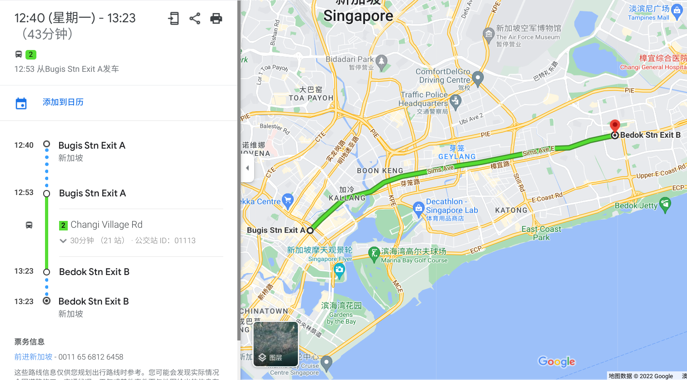
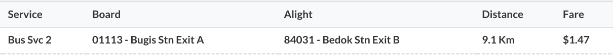
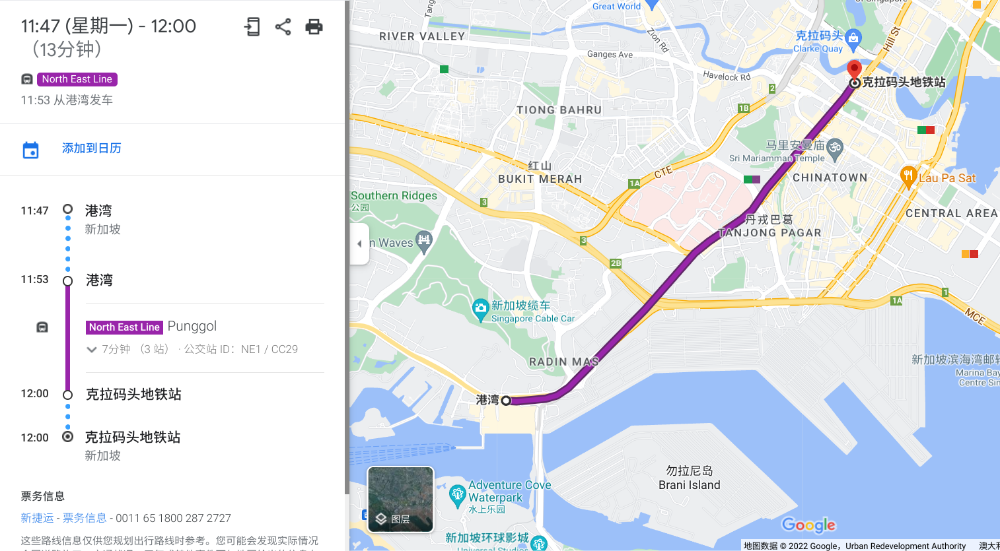
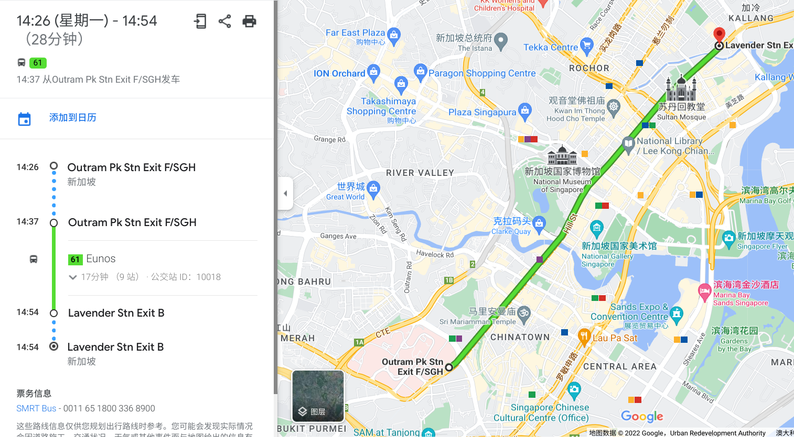
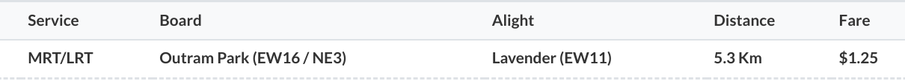
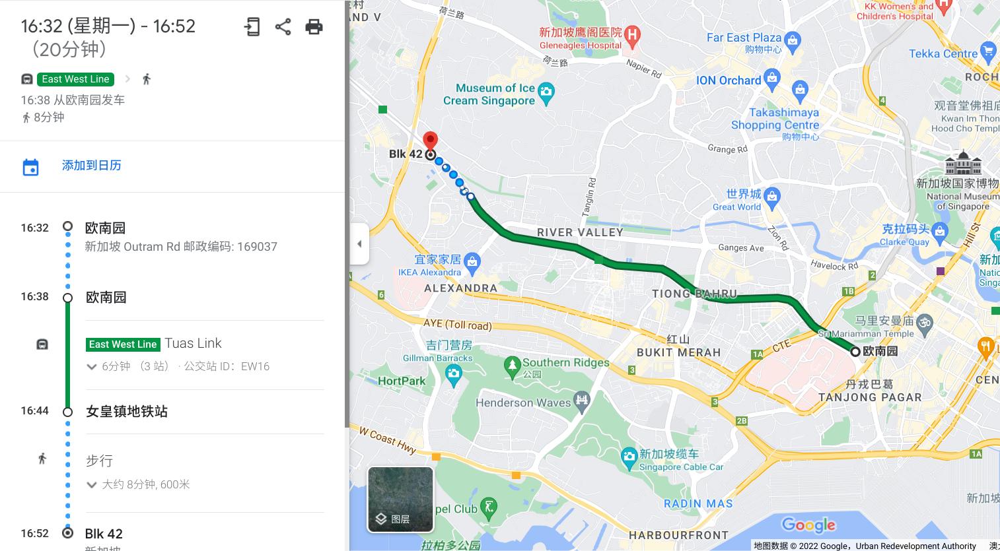

注：本文作于 2022 年 5 月 9 日，文中描述的信息未来可能发生变化，可以根据文末的参考资料获取最新的信息。
基本规则：
换乘规则：
例 1：由武吉士前往勿洛，巴士与 MRT 价格相同
由于车费只与里程有关，所以乘坐同样的里程，巴士与 MRT 的价格相同。例如，由武吉士前往勿洛，乘巴士为 9.1 千米，处于 8.3-9.2 千米的区间内，所以车费为 1.47 元：


乘 MRT 为 9 千米，也处于 8.3-9.2 千米的区间内，所以车费也为 1.47 元：

虽然巴士和 MRT 两者价格相同，但用时却大不相同。如果乘坐 MRT，全程只需要 14 分钟，而巴士需要 30 分钟。不过乘坐巴士也有优点，比如座位比较舒服。
另外，有时巴士或 MRT 的路线稍有曲折，导致两者里程不同，从而导致价格不同，见下面两个例子。
例 2：分别乘巴士和 MRT 由港湾前往克拉码头
由港湾前往克拉码头，由于巴士路线稍有曲折，里程为 4.7 千米，处于 4.3-5.2 千米的区间，所以车费为 1.15 元：


而如果乘 MRT，里程为 4 千米，处于 3.3-4.2 千米的区间，车费为 1.05 元：


例 3：分别乘巴士和 MRT 由欧南园前往劳明达
由欧南园前往劳明达，如果乘巴士，里程为 4.1 千米，处于 3.3-4.2 千米的区间，车费为 1.05 元：


而由于 MRT 路线稍有曲折，里程为 5.3 千米，处于 5.3-6.2 千米的区间，所以车费为 1.25 元：


例 4：乘 MRT 由中峇鲁前往女皇镇，然后换乘巴士前往 Blk 42
乘 MRT 由中峇鲁前往女皇镇，里程为 2.6 千米，处于 0-3.2 千米的区间，车费为 0.95 元；由女皇镇前往 Blk 42，里程为 0.6 千米，合计里程为 3.2 千米，没有超出 0-3.2 千米的区间，所以不收车费。


如果第二程超出了原来的区间，就需要支付车费，但由于是换乘，需要支付的车费也非常少，见下一个例子。
例 5：乘 MRT 由欧南园前往女皇镇，然后换乘巴士前往 Blk 42
乘 MRT 由欧南园前往女皇镇，里程为 4.1 千米，处于 3.3-4.2 千米的区间，车费为 1.05 元；由女皇镇前往 Blk 42，里程为 0.6 千米，合计里程为 4.7 千米，处于 4.3-5.2 千米的区间，超出了 0-3.2 千米的区间，所以支付超出的车费 0.10 元。


例 6：乘 MRT 由红山前往文礼，再返回
乘 MRT 由红山前往文礼，里程为 14.9 千米，处于 14.3-15.2 千米的区间，车费为 1.72 元。返程如果乘 MRT 由文礼返回红山，不符合「不可以出站后从同一地铁站进站」的换乘条件，所以不算换乘，车费为 1.72 元，合计 3.44 元：


而如果返程先乘巴士由文礼前往湖畔，再乘 MRT 由湖畔前往红山，就符合换乘条件，车费合计 2.11 元：

其他
针对「不可以换乘同一路车」的规则，可以先坐一站其他车，再换乘原来的车。
针对「地铁站之间换乘必须在 15 分钟以内」的规则，可以先坐一站其他车，这样就有 45 分钟的换乘时间。
有时两个地铁站距离较近，但乘地铁很远（如 DT13 梧槽到 DT22 惹兰勿刹、DT21 明古连到 CC2 百胜），这时可以利用「地铁站之间换乘必须在 15 分钟以内」的规则，出站后步行至另一个地铁站进站。地铁站间 15 分钟步行图如下：

| 距离（千米） | 票价 |
|---|---|
| 0-3.2 | 0.95 |
| 3.3-4.2 | 1.05 |
| 4.3-5.2 | 1.15 |
| 5.3-6.2 | 1.25 |
| 6.3-7.2 | 1.34 |
| 7.3-8.2 | 1.41 |
| 8.3-9.2 | 1.47 |
| 9.3-10.2 | 1.51 |
| 10.3-11.2 | 1.55 |
| 11.3-12.2 | 1.59 |
| 12.3-13.2 | 1.63 |
| 13.3-14.2 | 1.67 |
| 14.3-15.2 | 1.72 |
| 15.3-16.2 | 1.76 |
| 16.3-17.2 | 1.80 |
| 17.3-18.2 | 1.84 |
| 18.3-19.2 | 1.88 |
| 19.3-20.2 | 1.91 |
| 20.3-21.2 | 1.94 |
| 21.3-22.2 | 1.97 |
| 22.3-23.2 | 2.00 |
| 23.3-24.2 | 2.02 |
| 24.3-25.2 | 2.04 |
| 25.3-26.2 | 2.06 |
| 26.3-27.2 | 2.07 |
| 27.3-28.2 | 2.08 |
| 28.3-29.2 | 2.09 |
| 29.3-30.2 | 2.10 |
| 30.3-31.2 | 2.11 |
| 31.3-32.2 | 2.12 |
| 32.3-33.2 | 2.13 |
| 33.3-34.2 | 2.14 |
| 34.3-35.2 | 2.15 |
| 35.3-36.2 | 2.16 |
| 36.3-37.2 | 2.17 |
| 37.3-38.2 | 2.18 |
| 38.3-39.2 | 2.19 |
| 39.3-40.2 | 2.20 |
| 40.3- | 2.21 |
（2022 年 5 月 9 日）